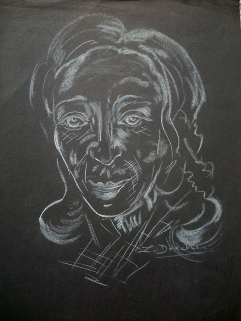

Zbigniew Drecki
1922 – 1998
Artist Biography
Zbigniew Drecki was born in Warsaw and survived incarceration during the war in both Auschwitz and Buchenwald, eventually escaping from a train transporting him to Dachau. He moved to Britain, settling with an English wife in Exmouth in Devon. Largely self-taught, Drecki for some time ran a painting school in Exmouth but in later years he concentrated solely on his own art. Painting in a house he and his wife owned in Florida, in addition to his Devon home, Drecki’s artwork was vibrant, colourful and at times wildly imaginative – a stark contrast to the art produced by other camp survivors such as Arnold Daghani. He appears to have been concentrating on the positive and also pursued political projects aimed at encouraging world peace and philanthropy.

Untitled